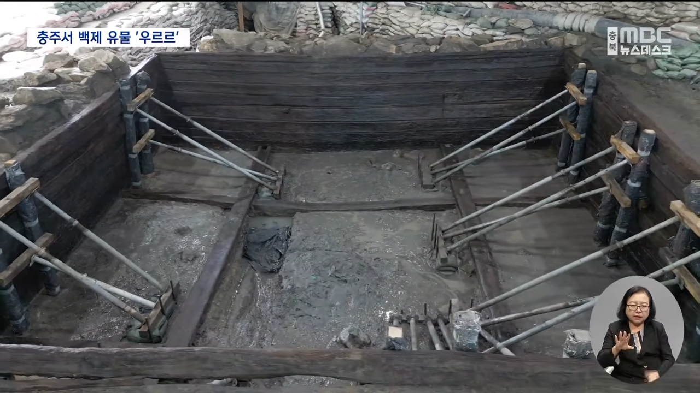
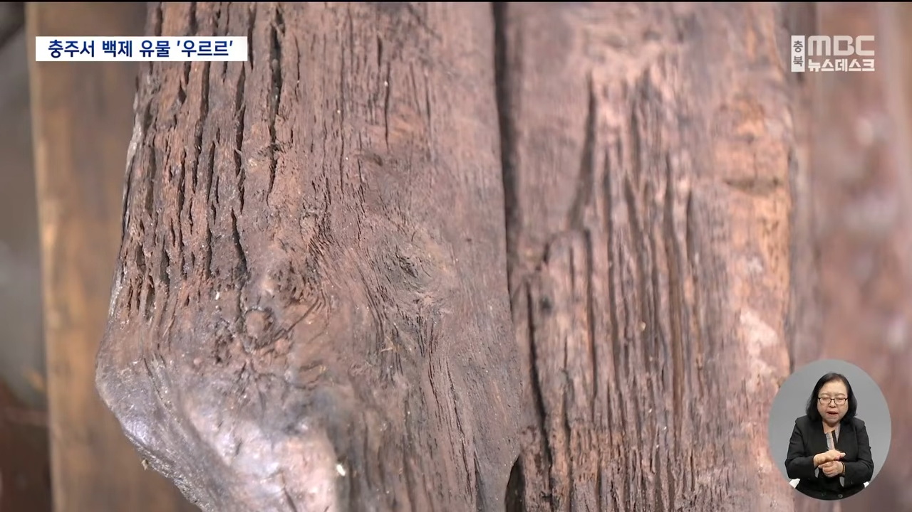
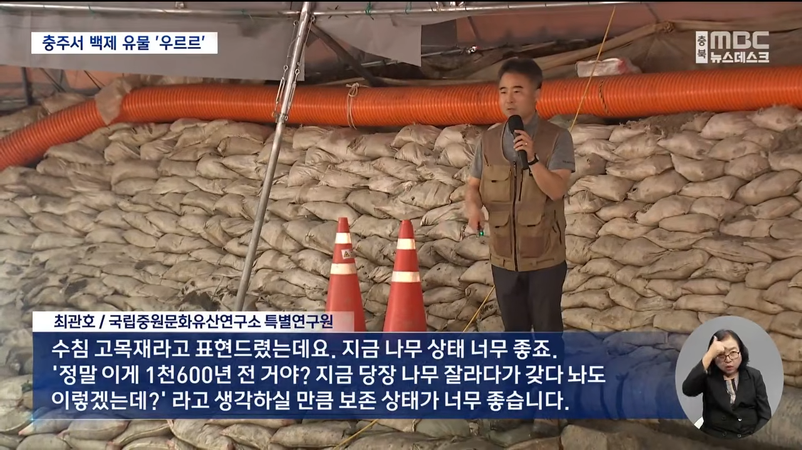

https://youtu.be/IqxEXFicFC8?si=ZTF2VFi34DsXJwrZ



지금 저게 1600년된 백제시대 나무임
https://youtu.be/IqxEXFicFC8?si=ZTF2VFi34DsXJwrZ



지금 저게 1600년된 백제시대 나무임
습기에 강한 밤나무와 단단한 참나무를 같이 썼다네
백제의 나무물탱크에선 밤나무냄새가 난다오
야해
진흙에 묻혀있어서 보존이 잘 된듯
백제 유물 귀한데 이게 발굴되네
어캐살았노
일본인들 눈 돌아가는 소리 들린다
근황이네
와 시바 미친 ㅋㅋㅋㅋㅋㅋㅋㅋㅋㅋㅋ
저거 건축물로 인정받으면 호류지 따잇하는 거 아님???
와
왜 석유가 안된것인가
지호가~ 간다!
김선태: 심심했는데 잘 걸렸다
저기서 백제 사람들이 목욕한거야?
공사하다가 발견한거… 아니지?
진흙이면 유물이나 기념비같은거 나오면 개이득인데
성 인구가 6개월을 버틸 식수였다며
우주급 희귀자원 클라스
싱글벙글하는거보소 ㅋㅋㅋ
개씨발 와우 ㅋㅋ
여기 1600년전 나무로 만든 물탱크가 있습니다.
보존상태 레전드네 ㄷㄷ
1600년? 미쳤네;;
김선태씨 당신의 충주입니다.
장미산성올라가면 19비가 한눈에 보임
잘보임
그냥 잘보인다구
발굴 시작하게 된 계기가 뭘까
미쳤네ㄷㄷ
백제탱크 ㄷㄷㄷ
백제전차군단 진격!
백제유물은 귀한데
아임 그루트
1600년전이라고 하니까 고대국가라는게 엄청 와닿네
가라! 백제자객!
와 백제때에도 철근을 썼네
아니 1600년전 물에 뿐 나무가 저정도라고?
다른 걸 떠나서 나무유물이 1000년이 넘은 것 자체가 유물인 수준임.
목욕탕이여?
우와 ... 저 방부처리? 뭘로 했는지 궁금하다